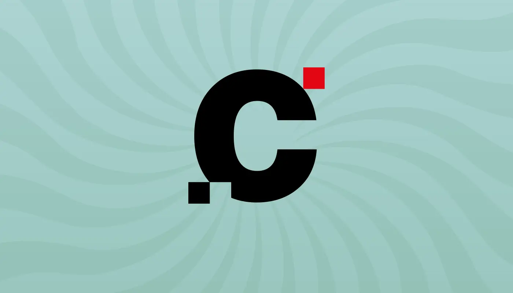

Tercer Año: Licenciatura en
Producción, Diseño y Realización Audiovisual
¿Llegaste a tercer año? Tenes 2 materias electivas cuatrimestrales
Tercer Año: Licenciatura en Periodismo
¿Llegaste a tercer año? Tenes 1 materia electiva cuatrimestral
Los alumnos deberán escoger como electivas materias de otras carreras de la FCH y otras unidades de la UNRC convalidadas por la comisión curricular del DCC.
Las otras licenciaturas del Departamento de Comunicación debieran ser una fuente natural para realizar la búsqueda de estas materias (materias específicas de cada licenciatura) pero tambien se puede optar por otras materias de la Facultad de Ciencias Humanas, e inclusive de otras facultades.
Ejemplo: Estudias periodismo y querés adquirir habilidades extras en edición de video y animación, pensá en elegir cursar cursar "Tecnología Digital"; o querés aprender sobre redes: podes elegir "Comunicación Digital Interactiva" de la Lic. en Diseño., Produc. y Realizac. Audiovisual.
Mirá los planes de las otras licenciaturas:
Las materias electivas no tienen correlativas y eliges el cuatrimestre en la que se dictan (tratá de distribuir tu carga horaria)
Tenés un montón de alternativas para hacer tu "crossover". Las materias de las otras licenciaturas, para profundizar en esa área disciplinar que te llama la atención. También podés buscar en otras carreras de nuestra Facultad. Si todo eso no te satisface, podés seleccionar materias de carreras en otras facultades.
El docente de la materia que elijas debe aceptarte en su clase (puede tener cupos). Si es de el Departamento de Comunicación será sencillo. Pero en caso de otras carreras, tendrás que contactarlo con tiempo para saber si te acepta, conocer los horarios de clase, las condiciones de cursado etc.
Una vez que te hayan aceptado, el docente tendrá que hacer una gestión especial en la Facultad para que se agregue la materia electiva a tu rendimiento académico. Es un trámite que involucra varios pasos y una resolución especial. Por eso debes conocer muy bien las condiciones de cursado y el contenido para que estés SEGURO/A de tu elección.
Consultá acerca de los pasos a seguir para tramitar las asignaturas electivas
Consulta a tu docente de confianza.
También puedes mandar un correo al coordinador de la carrera.
